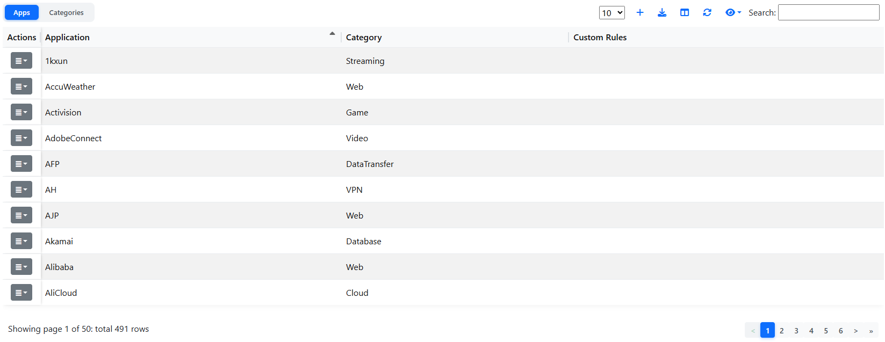
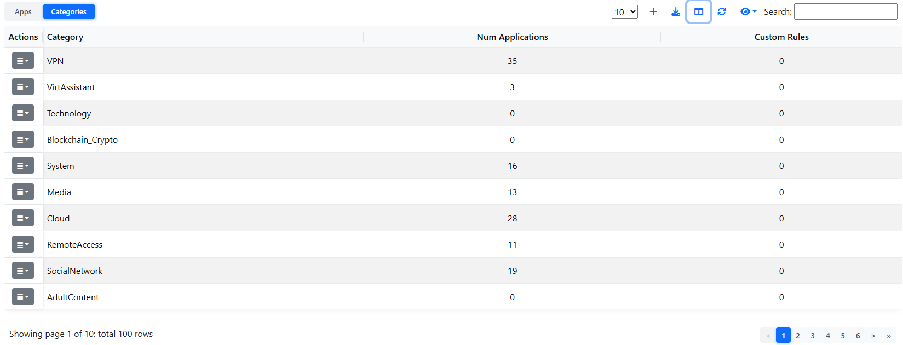
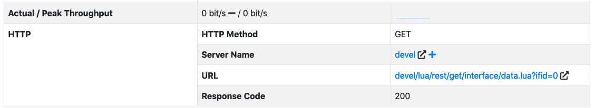
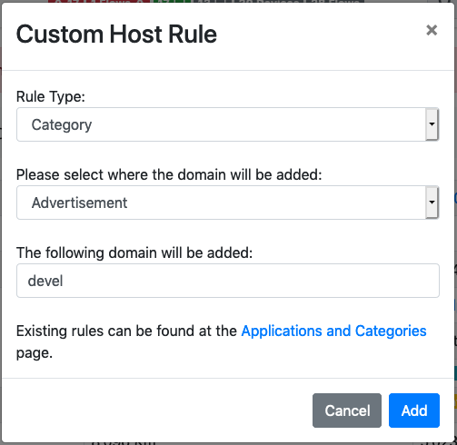

Приложения и категории
Категория
Традиционно nDPI использовался ntopng для обнаружения потоков протокола L7. С появлением все большего количества протоколов, говорить об отдельных протоколах зачастую слишком сложно. Пользователей обычно не интересует конкретный протокол. а скорее по целой группе протоколов. Например, проще рассуждать о VPN-трафике в целом, чем о VPN-трафике в целом. чем конкретная реализация VPN.
По этим причинам nDPI (и ntopng) были расширены, чтобы обеспечить логическую группировку протоколов, называемую категориями. С помощью категорий можно, например, получить представление о сетевом трафике хоста:

Обзор категорий хостов
Некоторые варианты использования, решаемые с помощью категорий, включают:
Блокировать все рекламные сайты (nEdge)
Вызывать оповещение всякий раз, когда мои сотрудники заходят на сайт с вредоносным ПО (ntopng, тогда как в nEdge есть возможность блокировать этот трафик)
Запретить клиентам доступ к Wi-Fi-сайтам конкурентов, поскольку они используют их для сравнения цен (nEdge)
Пользовательские приложения
На вкладке «Приложения» можно настроить категорию, связанную с с конкретным приложением.

Страница конфигурации приложений
ntopng определяет применение потока по некоторым правилам в nDPI. Однако, некоторые дополнительные правила могут быть указаны пользователем через –ndpi-протоколы|-p <файл> вариант. Файл имеет следующий формат:
# host:"<value>",host:"<value>",.....@<subproto>
host:"googlesyndacation.com"@Google
host:"venere.com"@Venere
Пример этого файла конфигурации доступен здесь.
Ntopng также поддерживает редактирование такого файла из GUI. Для этого необходимо по-прежнему необходимо использовать указанную выше опцию, чтобы указать на файл protos, расположенный в каталог, в котором ntopng имеет разрешение на чтение и запись. На практике в чтобы включить эту функцию, ntopng следует начинать с –ndpi-protocols=/var/lib/ntopng/protos.txt вариант. Если у вас уже есть прототип файл, переместите его в /var/lib/ntopng/protos.txt и бежать
sudo chown ntopng:ntopng /var/lib/ntopng/protos.txt
чтобы подготовить его к использованию ntopng.
После включения этой функции, нажав кнопку «Редактировать правила», она будет можно редактировать правила приложения прямо из GUI и добавлять новые протоколы. Важно отметить, что правила и новые протоколы будут создаваться и применяться только после перезапуска ntopng.

Редактирование правил приложения
Например, tcp:8080 правило в приведенном выше примере предписывает ntopng обрабатывать все трафик TCP на порту 8080 как HTTP. Чтобы удалить определенный пользователем протокол необходимо очистить все его правила и сохранить изменения. Протокол будет удален после перезапуска ntopng.
Пользовательские категории
Как показано выше, ntopng уже присваивает категорию по умолчанию известным протоколам L7. Тем не менее, пользователь также может указать список дополнительных хостов. быть отнесенным к определенной категории. ntopng предоставляет 5 пустых «пользовательских категорий». посвящены этой задаче, но пользователи также могут свободно изменять другие категории.
Хосты пользовательской категории можно указать с помощью некоторых правил на основе хостов. Правила на основе хоста будут использоваться для сопоставления подстрок некоторой информации о потоке:
IP-адрес клиента/сервера
DNS запрос
Хост SNI
HTTP Хозяин
Если совпадение найдено, категории потока будет присвоена соответствующая категория соответствия. Эти правила можно настроить из Категории вкладка.

Нажав «Редактировать правила», можно определить некоторые правила для сопоставления хостов и их связывания. их в категорию.

Изменить хосты категории
На рисунке выше показаны некоторые пользовательские хосты, определенные для Интернет категория.
Примечание
сопоставление хостов на основе IP-адресов в настоящее время ограничено IPv4 потоками.
ntopng также поддерживает внешние списки для определения пользовательских категорий, загружаемые из текстового файла (локального) или онлайн. услуги (напр. возникающие угрозы для Вредоносное ПО категория). Поскольку списки также используются для оповещения (например, для хостов в категории «Вредоносное ПО» или «Майнинг») вам может потребоваться добавить исключения в эти списки, внесение выбранных хостов в белый список. Можно добавить хост в список, добавив перед ним «!» к IP/имени хоста (например, !1.2.3.4).
Добавление правила из потока
На странице сведений о потоке можно нажать знак плюса рядом с SNI потока. DNS или HTTP хост, чтобы легко создать правило для связывания такого хоста с конкретным приложением. или категория.



Добавить правило хоста